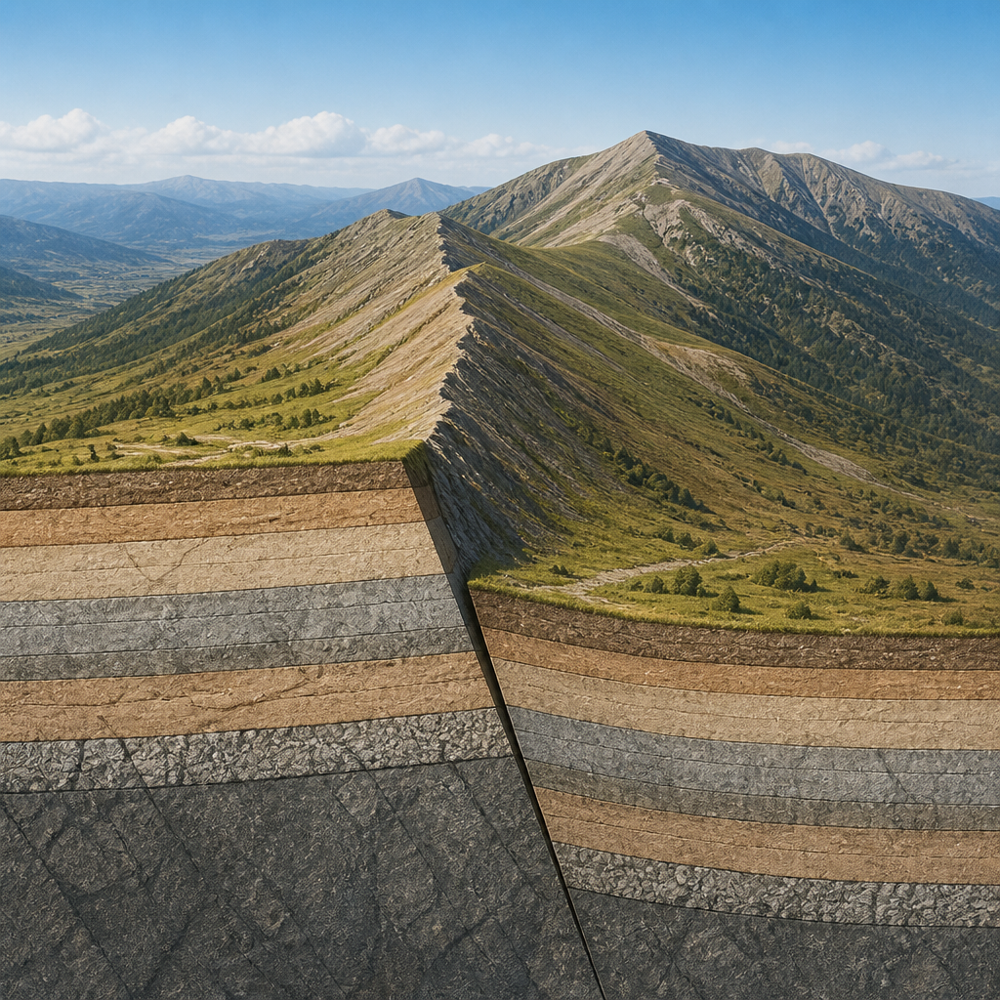
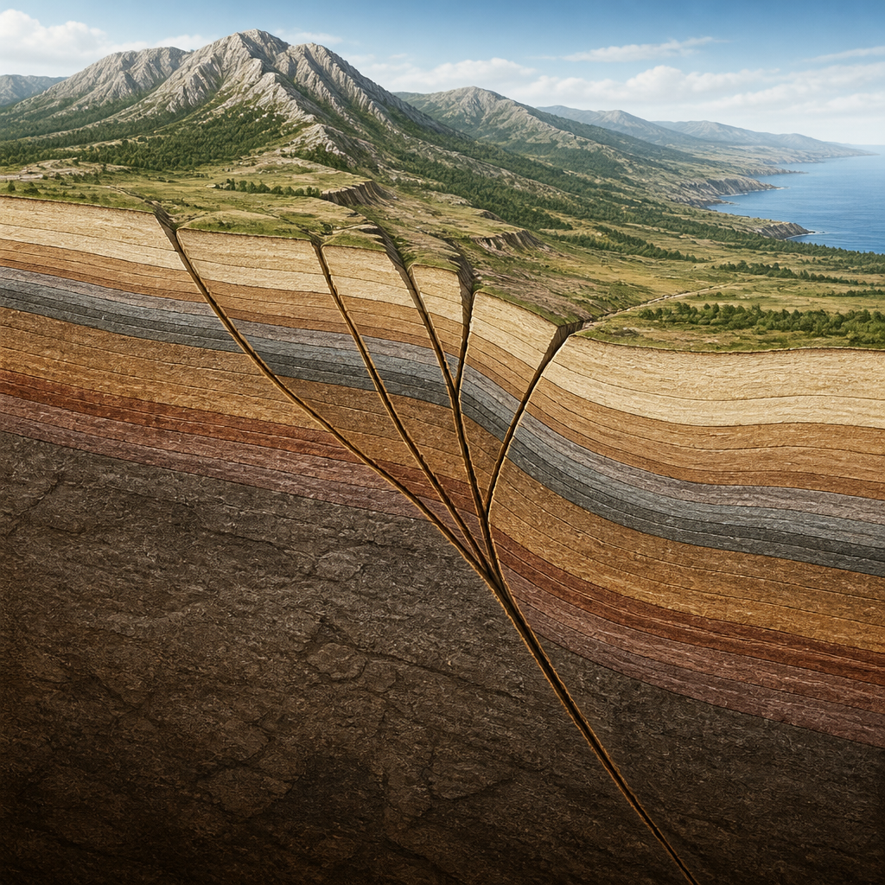

Gli studi geologici e paleosismologici aiutano a riconoscere strutture attive anche senza terremoti recenti nei cataloghi.
Nell’Appennino centrale il quadro sismotettonico, cioè l’insieme delle strutture geologiche legate ai terremoti, è dominato da faglie estensionali o normali: sono fratture lungo le quali una parte della crosta terrestre si abbassa rispetto all’altra. Molte di queste strutture sono orientate parallelamente alla catena appenninica. La loro attività non può essere valutata soltanto guardando ai terremoti recenti o ai cataloghi storici: il paesaggio e i depositi geologici conservano infatti una memoria molto più lunga.
Il terremoto del 24 agosto 2016, di magnitudo momento Mw 6.0, ha avviato la sequenza sismica dell’Italia centrale del 2016-2017. La magnitudo momento è una misura della dimensione di un terremoto basata sull’energia liberata dalla rottura. In quell’evento si sono rotte due faglie estensionali distinte: la faglia di Amatrice e la porzione meridionale del sistema di faglie del Monte Vettore-Monte Bove.
Il 26 ottobre la rottura della porzione settentrionale dello stesso sistema ha prodotto un terremoto di Mw 5.9. Il 30 ottobre, la scossa più forte della sequenza, di Mw 6.5, è stata causata dalla rottura della parte del sistema che non si era ancora attivata, completando quella delle porzioni coinvolte dalle due scosse precedenti. Lungo il ramo principale del sistema si è osservata fagliazione di superficie, cioè lo spostamento del terreno visibile direttamente al suolo: gli spostamenti verticali hanno raggiunto circa 1,8 metri.
Che il sistema Monte Vettore-Monte Bove fosse attivo e sismogenetico, cioè capace di generare terremoti, era noto da studi geologici iniziati negli anni Novanta. Le ricerche avevano descritto una struttura composta in superficie da più rami, convergenti in profondità in un’unica struttura principale, a una profondità di 10-15 chilometri. Prima del 2016, lungo i rami della faglia principale erano già state osservate deformazioni di depositi e forme del paesaggio risalenti al tardo Pleistocene e all’Olocene.

La lunghezza complessiva della faglia, di almeno 20-25 chilometri, e l’entità degli spostamenti osservati avevano indicato la possibilità di terremoti attorno a Mw 6.5. Gli studi paleosismologici, cioè le indagini sulle tracce lasciate dai terremoti del passato nei terreni e nei depositi, suggerivano inoltre che l’attivazione più recente fosse precedente all’ultimo millennio. Per questo il sistema era stato definito una faglia sismogenetica “silente”: una struttura capace di produrre grandi terremoti, ma senza eventi noti nei cataloghi degli ultimi 800-1000 anni, un intervallo paragonabile ai tempi di ricorrenza delle faglie sismogenetiche dell’Appennino centrale.
L’esperienza maturata nella Marsica, colpita dal terremoto del 1915 di Mw 7.0, ha contribuito a definire un metodo di studio. Quel terremoto fu causato dalla faglia del Fucino, riconoscibile lungo il margine orientale della Piana del Fucino. Gli studi geologici e paleosismologici hanno mostrato che questa faglia aveva generato l’evento del 1915 e altri terremoti nei millenni precedenti.
Da ricerche di questo tipo deriva la neotettonica, l’approccio che interpreta il paesaggio per ricostruire l’evoluzione dei processi tettonici dal Pliocene e dal Quaternario fino a oggi. Applicandolo, è possibile riconoscere la manifestazione superficiale di una faglia sismogenetica anche quando non esistono terremoti recenti associabili con certezza alla sua attivazione. Le indagini paleosismologiche permettono poi di individuare deformazioni avvenute prima dell’inizio delle osservazioni strumentali e, in alcuni casi, prima delle testimonianze storiche.
Il sistema Monte Vettore-Monte Bove non è un caso isolato. Altre grandi faglie normali dell’Appennino centrale mostrano una storia geologica paragonabile, con ripetute attivazioni ma senza grandi terremoti in epoca recente. Tra queste ci sono il sistema Monte Morrone-Maiella-Porrara, quello della Media Valle dell’Aterno-Valle Subequana e la faglia di Campotosto.
Il sistema Monte Morrone-Maiella-Porrara interessa il settore tra la Piana di Sulmona e la Maiella. Le dislocazioni, cioè gli spostamenti relativi di depositi geologici, testimoniano una lunga attività nel Quaternario. Indagini archeosismologiche e paleosismologiche indicano che l’ultima rottura completa del sistema risalirebbe al II secolo d.C. Le dimensioni della struttura e le informazioni geologiche portano a stimare per una sua rottura completa una magnitudo approssimativamente pari a Mw 7.
Le faglie della Media Valle del Fiume Aterno e della Valle Subequana sono interpretate come segmenti superficiali di un’unica faglia sismogenetica. A suggerirlo sono l’evoluzione geologica comune delle due valli, l’aumento degli spostamenti con l’età dei depositi, la vicinanza e il collegamento strutturale dei segmenti, oltre alla presenza di eventi paleosismici coevi. L’evento più recente indicato dalle indagini paleosismologiche risale al I secolo a.C. Il sistema raggiunge circa 34 chilometri in superficie e alla sua rottura completa è associata una magnitudo Mw 6.7-6.8.
La faglia di Campotosto si distingue in parte dalle altre perché negli ultimi decenni si è attivata, ma soltanto parzialmente. Terremoti fino a Mw 5.0-5.5, avvenuti durante la sequenza dell’Aquila del 2009 e nel 2017, sono attribuiti a questa struttura. Tuttavia, le deformazioni di depositi e terrazzi fluviali tardo-quaternari, insieme alle evidenze di ripetuti episodi di fagliazione superficiale nell’Olocene, non sono compatibili con attivazioni della stessa dimensione di quegli eventi. Dati geodetici e sismologici confermano che le rotture del 2009 e del 2017 hanno interessato solo una parte del piano di faglia e non hanno raggiunto la superficie. La struttura è lunga circa 20 chilometri e può ancora essere in grado di generare terremoti fino a Mw 6.6 circa.
L’assenza di forti terremoti in epoca recente non significa che una faglia sia inattiva. Le tracce nei terreni, nei depositi e nelle forme del paesaggio permettono di ricostruire eventi molto più antichi dei cataloghi storici e strumentali. Studiare le faglie silenti non serve a prevedere quando avverrà il prossimo terremoto: serve a definire meglio quali strutture possono produrre grandi eventi in un futuro rilevante per la società.
Questo articolo l'hai letto sul blog di Meteo Radar: un'app che ti mostra da dove vengono i numeri, invece di limitarsi a dartelo. E ogni mattina ne trovi uno nuovo come questo.